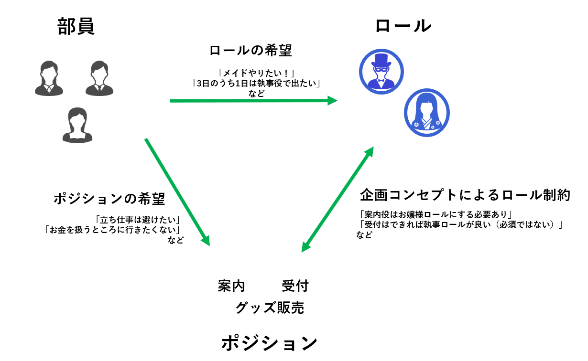
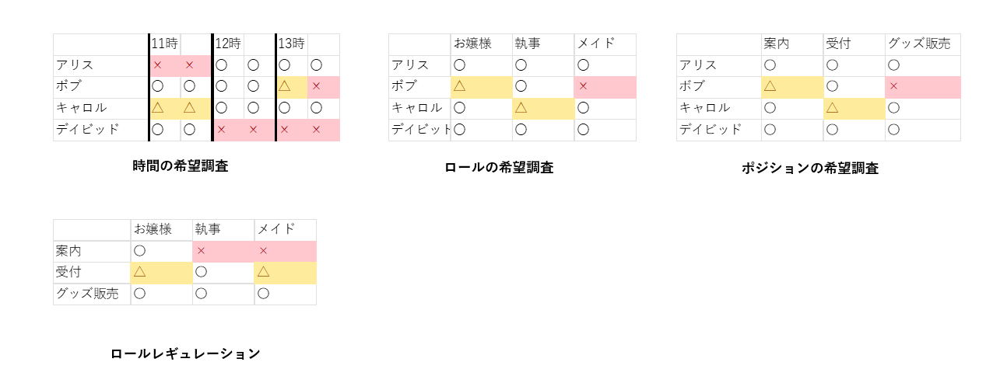

TL;DR
数理最適化を用いてシフトスケジューリング問題を解いたよ。多くの要望を考慮したシフトをシステマティックに作成することができたよ。
はじめに
所属サークルの一つである大阪大学お嬢様部が学祭に出店することになり、そのシフト担当になりました。
というわけで、前からやってみたかったシフトスケジューリング問題の実践投入をしてみました。
なお、個人情報保護や説明のしやすさの観点から、一部詳細を変更しています。
お嬢様部とは
もともとはtwitter上で語尾に「～ですわ」を付けるだけの小規模ネットミームでしたが、とある阪大生が「本当にサークルとして存在したら面白くね？」と思いついて大阪大学お嬢様部が生まれました。順調に運営が続き、現在アクティブ部員30名越えの中堅サークルにまで発展しています。大阪大学お嬢様部について詳しくはTwitter もしくは 公式ホームページをご覧ください。
余談ですが弊大学以外の名を冠したお嬢様部もたくさん存在します。よかったら調べてみてください。
線形最適化(線形計画法)とは
という条件（複数あってもよい）のもとで
を最小化する問題を解くことです。
NP困難な問題ですが、単体法・内点法などのヒューリスティックアルゴリズムで現実的に高速に解くことができます。
なお、一部の変数が整数でなければならないという制約があると「混合整数線形計画問題（MIP）」と呼ばれる問題となり、今回もこれにあたります。 具体的にシフトをどのように不等式に落とし込むかは後述。
前提知識
弊サークルでは部員がロールプレイをしてお客様をもてなすのですが、それゆえ、少し複雑な要件があります。

部員にはそれぞれ、ロールの希望とポジションの希望があり、また、企画のコンセプトとして「このポジションにはこのロールを当てたい」というような運営側の希望があります。さらに、【この時間は全員が執事です】みたいな時間が出来ちゃうとギャグなので避けたい、というようなアンチパターンがいくつかあり考慮に入れる必要があります。
人の手でこれらを総合してうまいこと組むのは至難の業であり、ここで数理最適化の強みが出ます。
開発
データの用意
Google Form でシフト希望アンケートを取ったのち、Excelに落とし込みます。ポジション/ロールの希望については選択式なので簡単ですが、時間の希望については自由記述を定型データに落とし込む必要がありそれなりに骨が折れる作業でした。次回以降の課題の一つです。

時間/ロール/ポジションの希望調査に運営から聞いたレギュレーションを追加して4つの表が出来上がりました。
なお、実際には30部員・20時間（40コマ）・13ポジション・4ロールを扱う必要があり、それなりに大きな表になります。
コストの定義
pandasにはExcelの表を読みだしてそのままDataFrameにしてくれる機能があります。そこからさらにndarrayに変換して、○△×を適切なコストで置換してやればとなるようなコスト表が出来上がります。他の要素についても同様。
後から出てきますが、シフト計画はこれらの合計を最小化するように立てるので、【〇】のコストを小さく、【×】のコストを大きくするのが良いです。
import pandas as pd
...
WP_df = pd.read_excel('data.xlsx', index_col=0,sheet_name='ポジション')
WP = WP_df.values
WP[WP=="〇"]=1
WP[WP=="△"]=10
WP[WP=="×"]=10000000
これらの積を取って、部員・ポジション・ロール・時間が与えられたときのコスト行列を定義します。
やや効率の悪いやり方をしているように思えますが、せいぜい部員×ポジション×時間のオーダーしか回らないこと、実際には細かい要望に合わせてcost関数を変更する必要があること等が理由でこの形に落ち着きました。
def cost(self, w: int, p: int, r: int, t: int) -> float:
return self.WT[w,t]*self.WP[w,p]*self.RP[r,p]
WPT=np.zeros((self.wnum,self.pnum,self.tnum))
for w in range(self.wnum):
for p in range(self.pnum):
for t in range(self.tnum):
WPT[w,p,t]=self.cost(w,p,role_WD[w,self.time2day(t)],t)
目ざとい読者はお気づきかもしれませんが、コスト行列にロール要素が含まれていません。これは、当初WPRTの4軸で実装したところ変数と条件の数があまりに多く一向に有効解が見つからなかったため、諦めてロールを決め打ちしたという事情があります。（role_WDがこれにあたり、role_WD[部員番号,企画日何日目か] = その日のロール）なる行列をあらかじめ定義しました。）
モデルの作成と変数定義と
python-MIPを使ってモデルと変数を作ります。
（説明の見やすさのため、変数名を一文字にしていますが実際はvar_WPTみたいな名前を付けてます。命名のベストプラクティスはなんも分らん）
import mip
m=mip.Model("ShiftScheduling")
X=m.add_var_tensor((wnum,pnum,tnum),name="worker-place-time",var_type="B")
python-MIPではadd_var_tensorメソッドによって多次元配列の変数集合を作ることができます。
今回は 部員番号を,ポジション番号を,時間セクション番号をとして、 なる変数行列をつくりました。これにより、各種条件をシンプルに書くことが可能になります。
目的関数
各セルのコストと変数が決まったため、線形計画問題に落とし込む準備ができました。
今回はE= X*SC.WPTの合計値の最小化を目指します。これはすなわち、X[w,p,t]==1となる（＝部員wがポジションp、時刻tでポジションに入るときの）w,p,tのコストの合計値を最小化する事と同義です。
m.objective = mip.minimize(mip.xsum((X*SC.WPT).flatten()))
制約条件
このままでは、「全時間誰も入らないのがコスト0で一番いいね！」となってしまします。そういうわけにはいかないので、必要な制約条件を追加してきます。
python-MIPではm+=条件という形で制約条件を追加することができます。かなり思いきった演算子オーバーロードです。
どの時間もどの場所もちゃんとシフトの人を入れる
「すべての時間tとポジションpについて、w方向に圧縮した場合（部員を問わない場合）常に1となる」と読みかえて式に落とします。
for t in range(tnum):
for p in range(pnum):
m += mip.xsum(X[:,p,t]) == 1
一人二役の禁止
ある時間に同じ人が異なる2か所のポジションに入ってしまうと大変なことになります。制約条件として「任意の時間t,部員wについてX[w,p,t]=1なるpは最大一つ」⇔「p方向に圧縮した合計値が1以下」を追加します。
for t in range(tnum):
for w in range(wnum):
m += mip.xsum(X[w,:,t]) <= 1
完成！
破綻のないシフト計画が完成しました！
（実際のシフトは個人情報保護のため割愛）
要望とかに答えるフェーズ
出来上がったシフト表をよく見ると色々と文句の付け所があることに気づきます。この節では文句/要望とそれにどう対応したかを紹介します。
「全員執事」みたいなギャグを避けるために
任意の時間で、どこかのポジションはお嬢様ロールが入っていなくてはならないという制約を追加します。お嬢様ロールの部員のみを抜き取って、時間を固定したときの合計が1以上になればよいです。
for t in range(tnum):
ojousama_lst=[w for w in range(wnum) if role_WD[w,t2d(t)]==ridx("お嬢様")]
m+=mip.xsum(X[ojousama_lst,:,t].flatten())>=1
リストをインデックスにできるnumpy式スライシングの便利さに感動。
連続時間制約
機械は感情がないので、「部員によっては1日中休憩なし」みたいな血も涙もないシフトを出してきます。そこで、3時間以上連続でシフトに入れることを禁止する制約を付けます。
30分1コマなので任意の時刻tにおいてtからt+6までの合計値が5以下であればよいです。
for w in range(wnum):
for t in range(tnum-5):
m+=mip.xsum(var_WPT[w,:,t:t+6].flatten())<=5
○○さんだけ働かせすぎじゃない？問題
シフト時間ができるだけ公平になるような制約/目的関数を追加します。
できるだけ公平と聞いてまず思いつくのは分散最小化ですが、これはXについての2次式となり、目的関数や制約条件に落とし込むことができません。そこで、「最もシフトに長くいる人のシフト入り時間の最小化」をすることで、不公平に働きすぎる人を抑えようというアプローチをとります。
最小値の最大化は線形計画法の鉄板テクニックで、新たな中間変数zを用意して
と読み替えることで線形式に落とし込めます。
z=m.add_var(name="max_shift_time",var_type="I")
m.objective = mip.minimize(
mip.xsum((X*SC.WPT).flatten())
+ z #新たに導入する中間変数
)
...
for w in range(wnum):
m += mip.xsum(X[w,:,:].flatten()) <= z
また、重みを付けて一部の部員の制限を緩くしたり厳しくしたりもできます。
for w in range(wnum):
r=1
if w==3:
r=1.2 #少し多めに働ける
m += mip.xsum(X[w,:,:].flatten()) <= r*z
交代が多すぎる問題
30分単位でコマを取ったことで、30分単位で次々と部員が入れ替わるシフトが出来上がりました。誰も得しないので、最低連続1時間くらいは入るようにしたいなという気持ちがあり、それを制約に加えます。
具体的には を制約に入れることで 0-1-0 の組み合わせを取る連続する3コマを禁止できます。
for t in range(tnum-2):
for w in range(wnum):
for p in range(pnum):
m += -var_WPT[w,p,t]+var_WPT[w,p,t+1]-var_WPT[w,p,t+2]<=0
if t==0:#最初の場合、追加で1,0を禁止
m += var_WPT[w,p,t]-var_WPT[w,p,t+1]<=0
いろんなポジションにつきたい / できるだけ1つのポジションでいたい
両意見出ました。個別にアンケートを取って、それぞれ対応します。
いろんなポジションにつきたい
新たにY[部員,ポジション]=そのポジションに入ることが1度でもあるかのバイナリ変数行列を作成し、その合計値を目的関数に加えます。目的関数は最小化したい一方、これは大きいほど（多くの種類のポジションに入れるほど）嬉しいため、係数にマイナスがつきます。
Y=m.add_var_tensor((wnum,pnum),name="in_WP",var_type="B")
m.objective = mip.minimize(
#省略
-mip.xsum(Y.flatten()) # きるだけたくさんの場所に入れたい
)
...
wnames=["アリス","キャロル"]
for w in [widx(x) for x in wnames]:# widx()は部員名を入力して部員番号を出力
for p in range(pnum):
m+=mip.xsum(X[w,p,:])>=Y[w,p]
wが希望者かつX[w,p,:] に一つも1が立っていない場合（=そのポジションに1度も入らない場合）のみ、sum(X[w,p,:])=0となるのでY[w,p]=0になります。逆に、それ以外ではsum(Y[w,p])を最大化する圧力がかかるため、Y[w,p]=1となります。
できるだけ1つのポジションでいたい
Y2[部員,ポジション]=そのポジションに入ることが1度でもあるかのバイナリ変数行列を作成します。（Y1と異なり、こちらは目的関数に入れません）
Y2=m.add_var_tensor((wnum,pnum),name="in_WP",var_type="B")
...
wnames=["ボブ"]
M=99999
for w in [widx(x) for x in wnames]:
for p in range(SC.pnum):
m+=mip.xsum(X[w,p,:])<=M*Y2[w,p]
m+=mip.xsum(Y2[w,:])==1
X[w,p,:] に一つも1が立っていない場合、sum(X[w,p,:])=0より、Y2[w,p]は自由に値を取ることができます。逆に、1つでも1が立っている場合、Y2[w,p]=0では条件を満たさないので、Y2[w,p]=1と確定します。
各部員ごとにp方向に圧縮した合計をとることによって、その部員が入るポジションの種類の上限を決めることが可能になります。（下限は決まらないことに注意。sum(X[w,p,:])=0だがY2[w,p]=1なる変数の取り方は違法ではないため）
特定時刻にのみ必要なシフト
特定時刻にのみ必要なシフトの存在が発覚しました。色々考えた結果、別途「この時間にこのポジションのシフトが必要かどうか」の表をExcelで作り、「どの時間もどの場所もちゃんとシフトの人を入れる」制約をそれに合わせて変更する方針を取りました。
NeedsWorker=pd.read_excel('data.xlsx', index_col=0,sheet_name='必要人数')
...
for t in range(tnum):
for p in range(pnum):
m += mip.xsum(X[:,p,t]) ==NeedsWorker[p,t]
これにより、「朝の時間だけビラを配る」「企画全体でお昼休憩を取りたい（が来たお客さん向けに外に案内役が一人必要）」等の要望をかなえることができました。
○○のポジションはベテランの部員にしか任せられない
「任せられない」も「希望しない」も内部的には同じであることを利用してシフト希望調査の希望度を改ざんすることで事なきを得ました。
定式化できなかった要望
立ち仕事は連続すると疲れるので、適度に座り仕事を入れてほしい
気持ちが分かる一方でややあいまいな要望であり、「立ち仕事か座り仕事か」フラグを導入するのも面倒だったので最後に自分が確認して「ヨシ！」をやりました。
3日間のシフトのうち、1日は完全フリーにしてほしい
目視で人が余っていそうな日を選び、その人のその日の希望をすべて【×】にすることで解決しました。
この記事を書いてる間に気づいたのですが、「できるだけ1つのポジションでいたい」と同じ方針で「シフトが1コマ以上入っている日が2日以内」という制約が書けます。
ゆっくり来るか早く帰るかしたいのでシフトはどこかに固めてほしい / 学祭を見て回りたいので長い休みが欲しい
目視でそれっぽいところの希望を【x】にすることで解決（？）。
具体的に何時間かが分からない（他部員のシフト状況に依存する）ため、定式化できなかったです。何か良い方法があれば教えてください。
その他技術的なこと
制約で書くか大きいコストを入れるか
【×】と希望を出した時間やポジションは原則として入れないルールがありますが、これを実現するには2つの方法があります。
①制約条件として、【×】と希望を出したセルにビットが立つのを禁止する
②非常に大きいコストを入れて目的関数を最小化する過程ではじいてもらう
要は、変数が増えるのと制約が増えるので（or 2段階単体法の1段目が厳しい場合と2段目が厳しい場合とで（？））どちらが負担が少ないかという問題なのですが、双対問題に切り替わると変数と制約の数が逆転する上、そもそもoptmizerの内部でゴリゴリに最適化がかかっているためどちらが良いと一概に言える感じではなさそうです。体感としても、①のほうが早いタイミングと②のほうが早いタイミングがあり、ちゃんとした結論は出ませんでした。この辺の話に詳しい人がいたら教えていただきたいです。
おわりに
今回、数理最適化を使って現実の問題を解くということを初めて行いました。泥臭い調整が多く結構大変だったものの、楽しく開発できました。給与の発生しないボランティアの中、「すべての要望を通すと企画が成立しなくなる」というような心配をしていましたが、無事ちゃんと回るシフトができて安心しました。部員の皆さん、ご協力ありがとうございました。
一方、システム的にいくつか反省点があり、
・要望が出るたびにコードを追加する必要があり、結果としてかなりの工数になったことに加え、他の人と分担することもできなかった（ほとんどの部員はコードが書けないため）。
・定式化できない要望や、最後の細かい調整などで結果的に出来上がったシフト表に手を加える必要があった。
・当日の体調不良に対して、代替が誰もいない というような状況が起こった。
・当日シフト担当者がダウンした際（案の定これが起こったのですが）のオペレーションが何も決まっておらず、上記の問題と合わせて現場の混乱のもとになった。
等々、次回に向けた課題としたいです。